보도 유무를 먼저 확인
좁아 보여도 양쪽 보도가 있으면 1차도로로 단정하지 않습니다. 처음의 1–4차 확정 분류를 철회했습니다.
카카오맵 로드뷰 · 영상 2026-06 · 동일 파노라마 회전 시점; 정확한 방위각 아님
Junction field report · 2026.11.22
사진에서 정한 규칙을 실제 동네 생성에 적용하고, 눈높이에서 다시 확인했습니다. 도로 연결부터 횡단보도, 경사판과 점자블록까지의 최종 검토입니다.
공개 배치 확인 공개판 · 실제 배치 화면과 검토 결과검사 기준 소스 7a0323e · 검사 사본 87956683bb5545f2
2026년 11월 22일 확인 기록입니다. 이후 버전 전체에 대한 재검사 기록은 아닙니다.
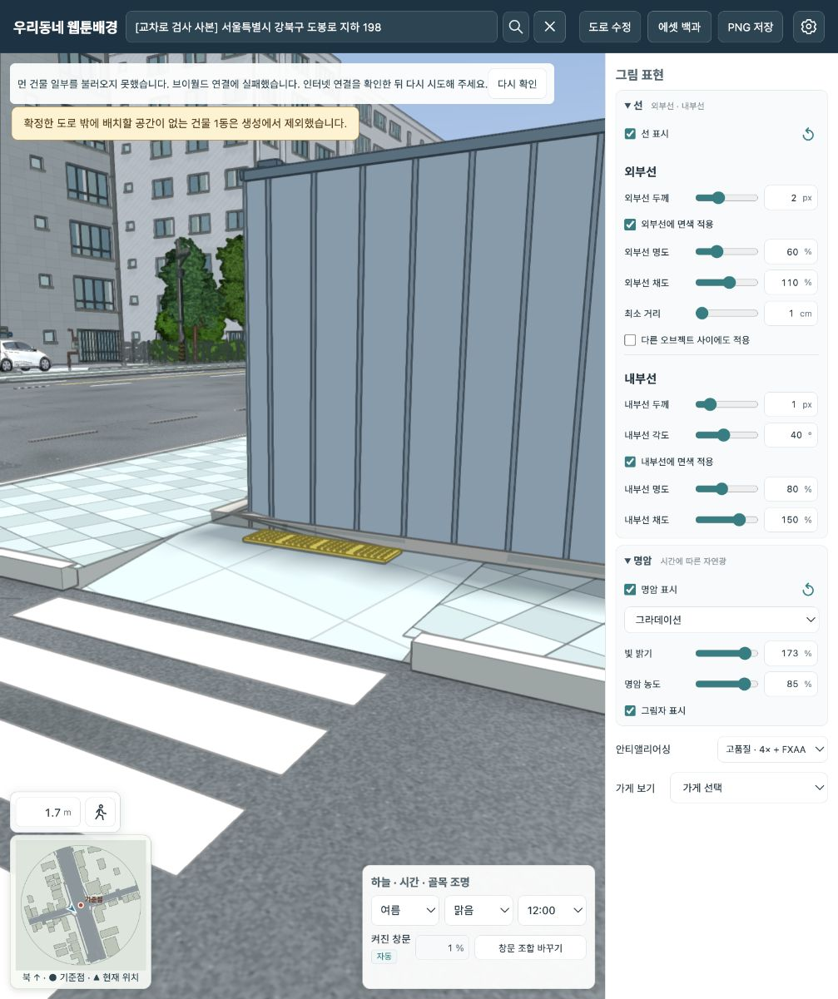
참고 로드뷰 원본은 사용 조건이 확인되지 않아 공개 서버에 올리지 않았습니다. 아래에는 관찰 내용과 원본 지도 링크를 표시합니다. 이 컴퓨터의 사진 첨부판에는 200장을 모두 넣었습니다.
01 / 실제 동네
도봉로198 일대의 저장된 실제 원자료를 공개 사이트에서 전체 재생성했습니다. 원본 동네는 보존하고 검사 사본에서 확인했습니다. 참고 사진과 이 생성 장면은 같은 촬영 위치를 그대로 재현한 전후 사진이 아닙니다.
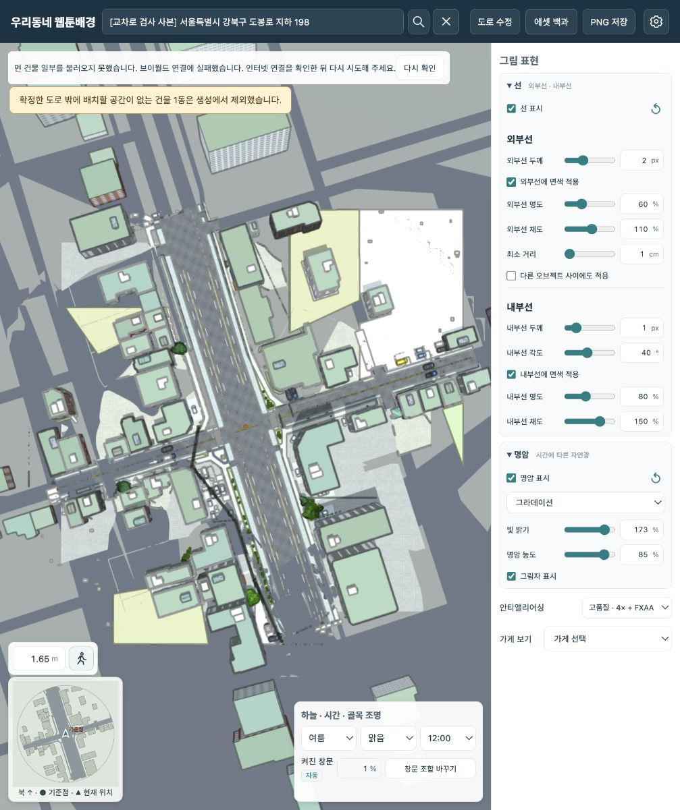
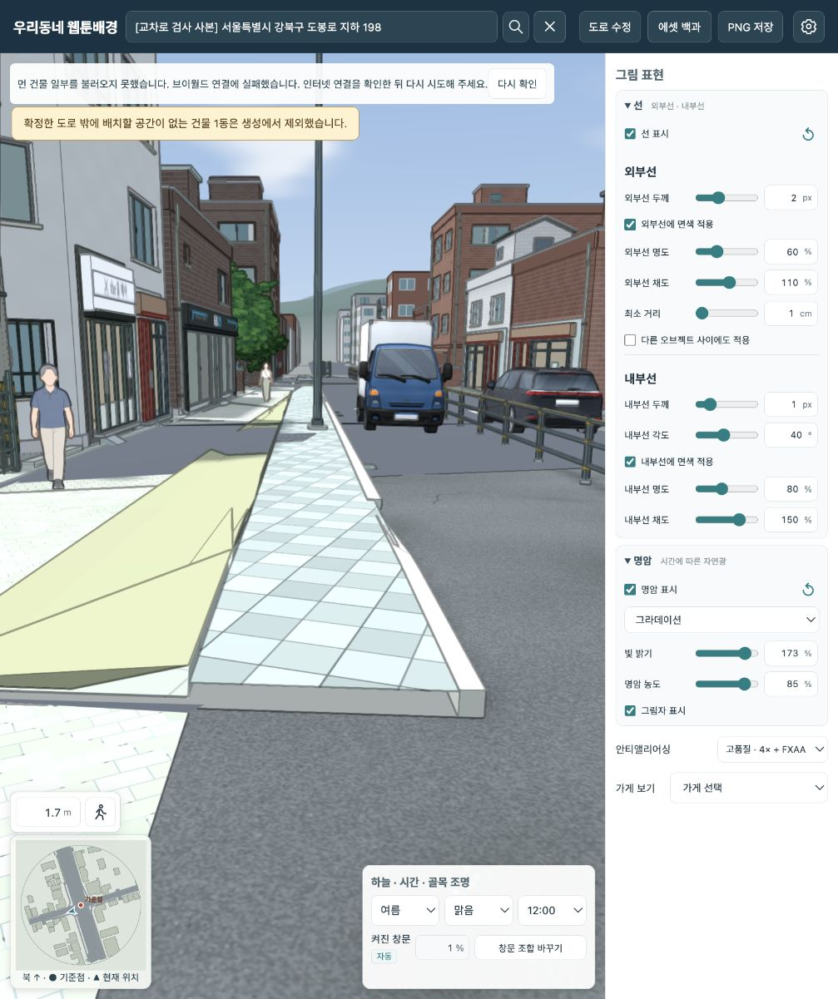
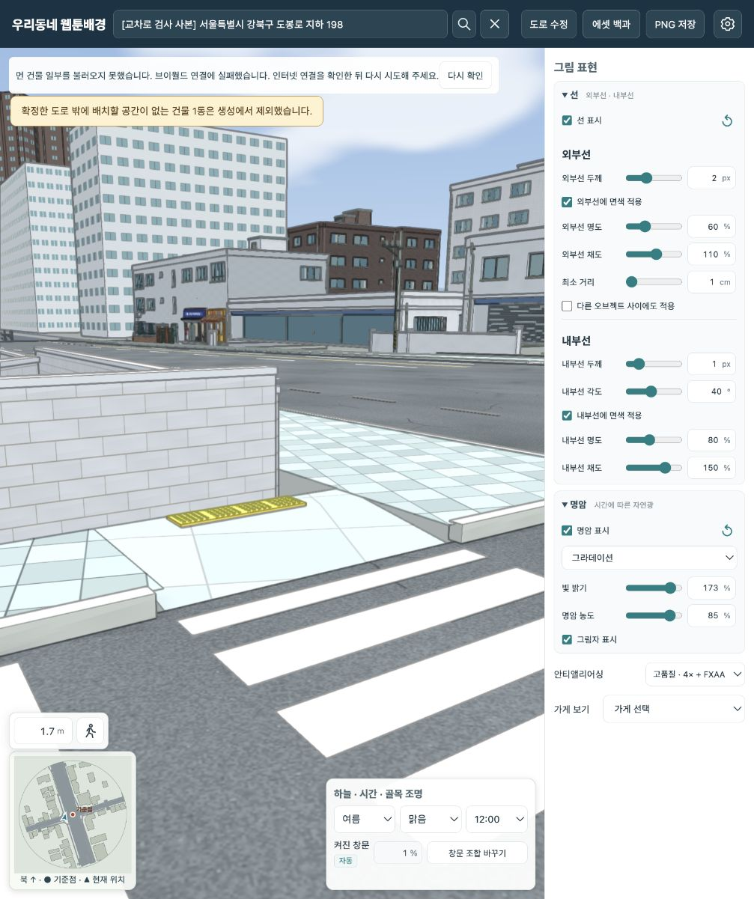
02 / 관찰 → 규칙
사진 200장은 200개의 서로 다른 교차로가 아닙니다. 같은 일대에서 시점을 돌려 기록한 사진이 포함됩니다. 영상 표시는 2026년 6월이며, 정확한 파노라마 ID와 방위각은 수집하지 않았습니다.
좁아 보여도 양쪽 보도가 있으면 1차도로로 단정하지 않습니다. 처음의 1–4차 확정 분류를 철회했습니다.
밝고 거친 포장의 경사 통로를 일반 아스팔트 차량 골목으로 취급하지 않습니다.
사진에는 점자블록 위 기둥이 보입니다. 실제의 장애물을 좋은 생성 규칙으로 복제하지 않고 횡단부 접근 공간을 확보합니다.
골목 정면의 분리대 연속 여부는 가림 때문에 확정하지 않았습니다. 분리대가 없다고 회전이 허용되는 것으로 추정하지 않습니다.
교차로 내부 유도선과 접근부 중앙선·정지선·횡단보도를 구분합니다. 가능한 모든 회전에 유도선을 자동으로 긋지 않습니다.
기존 청색 차선과 분리시설을 먼저 보존하고, 새 흰선·노란선이 겹치지 않도록 합니다.
03 / 검토에서 찾은 결함
경계의 아주 작은 오차 때문에 승인된 경사판 4개 중 2개가 빠졌습니다. 계획 개수와 실제 생성 개수를 분리하고, 같은 확정 면으로 보도 제거와 경사판을 만들도록 고쳤습니다.
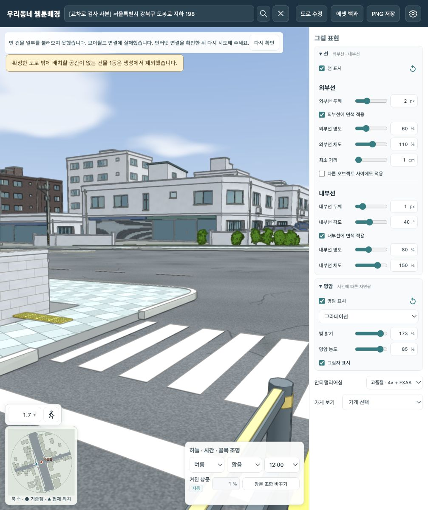
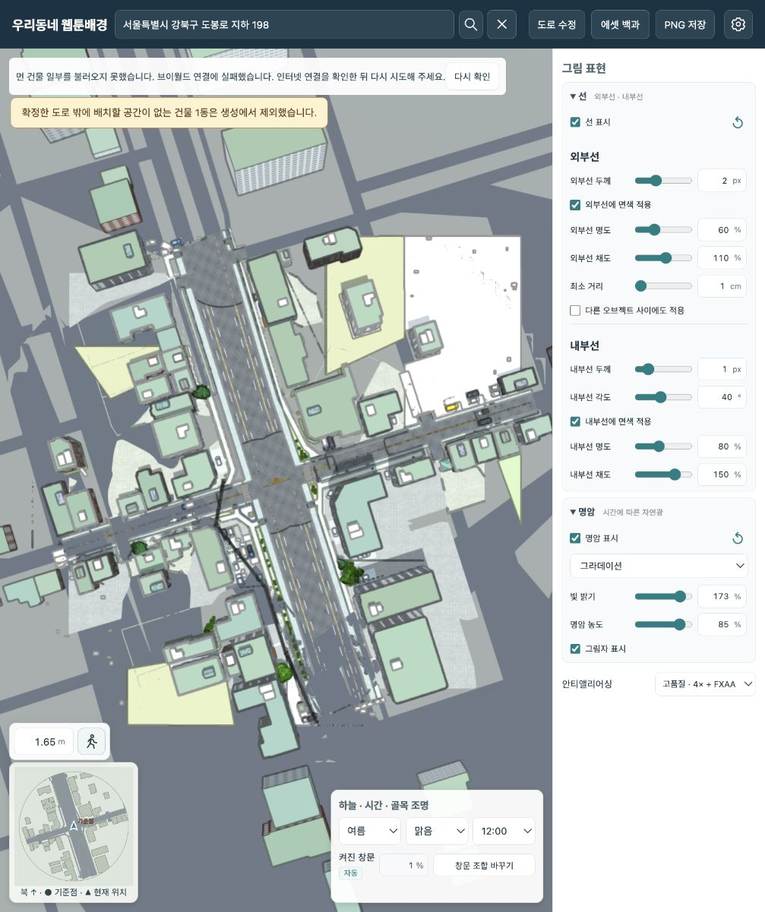
아래 두 화면은 같은 카메라의 로컬 재적용 비교입니다. 위의 공개 도봉로198 장면과 다른 검사이며 공개 화면 증거로 바꾸어 설명하지 않습니다.
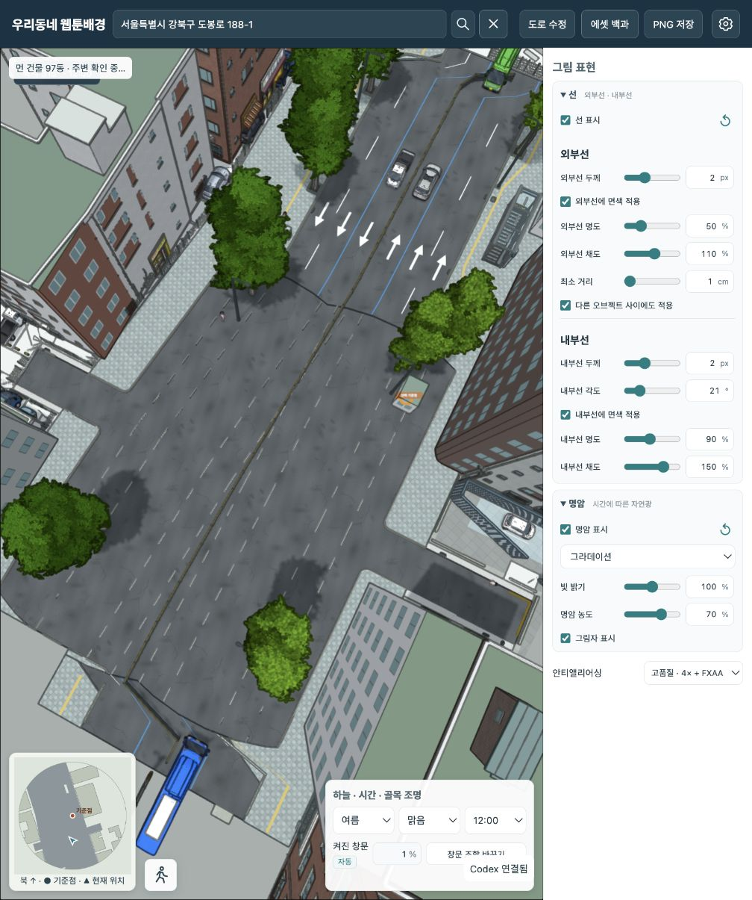
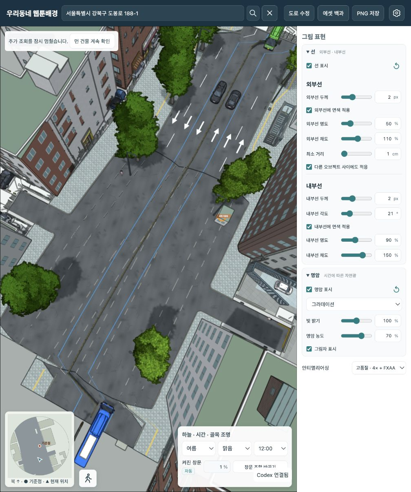
04 / 부품과 자동 배치
백과에는 부품 9종과 조립 예시 3종, 총 12개 GLB가 등록돼 있습니다. 실제 생성에서는 점자블록 원본을 그대로 쓰고, 연석·경사판·노면 표시는 도로 폭과 지형에 맞는 가변 형상으로 만듭니다.
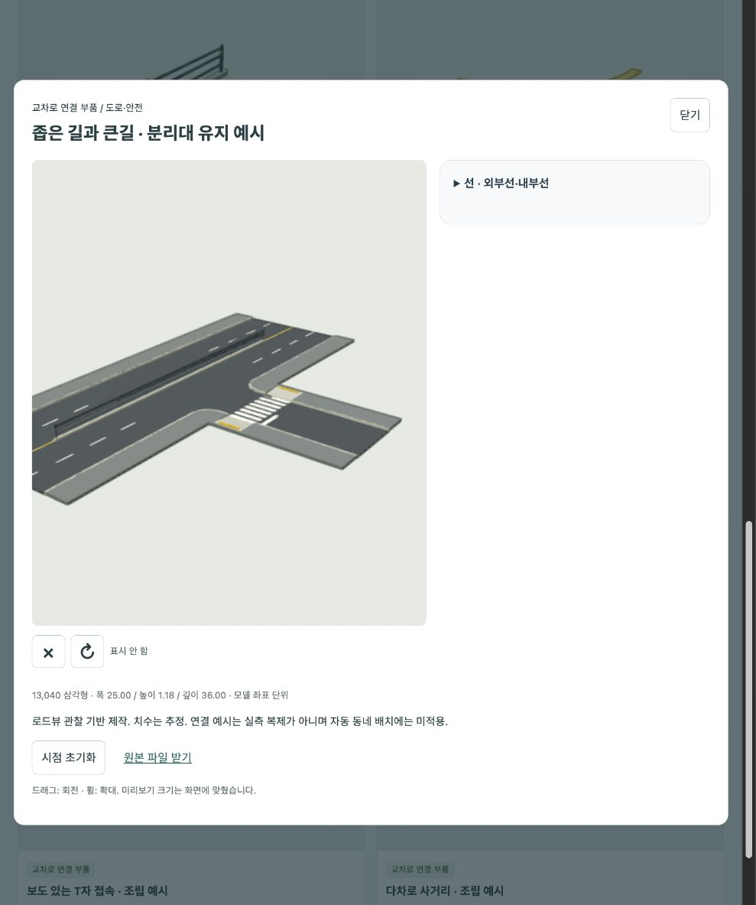
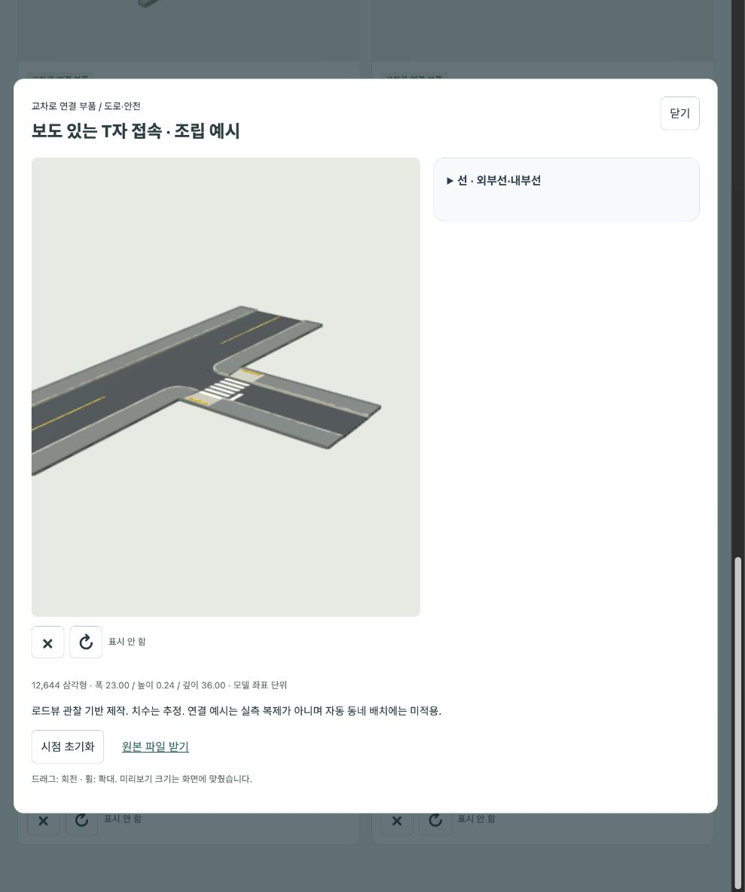
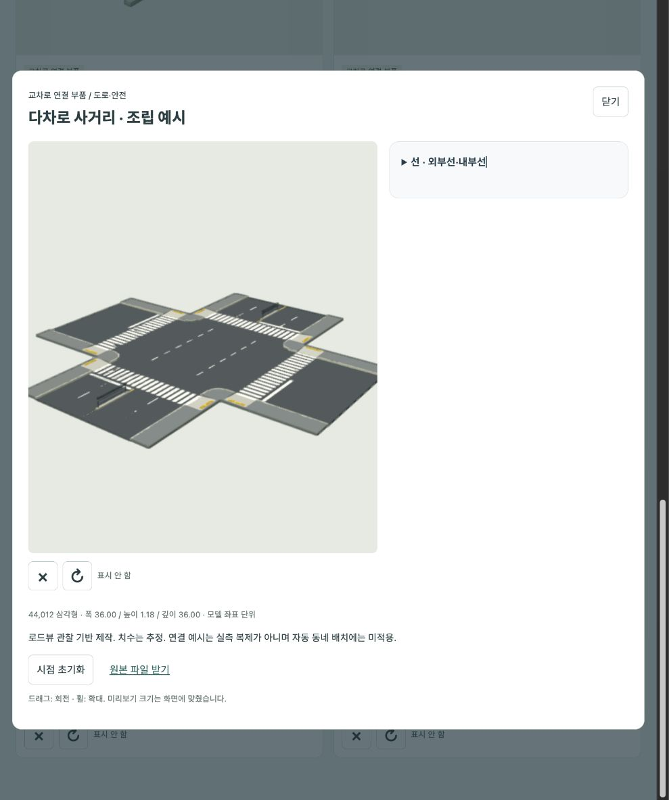
실제 정보와 수동 편집을 우선합니다. 분리된 상·하행 중심선에 왕복 폭을 두 번 적용하지 않습니다.
직진하는 두 구간의 폭 차이는 넓은 구간 안에서 서서히 연결합니다. 모퉁이는 폭과 각도를 함께 봅니다.
횡단보도와 양쪽 경사판·점자블록 전체가 들어갈 때 배치합니다. 부분 누락을 성공으로 처리하지 않습니다.
차선은 완성된 노면에 투영합니다. 경고띠는 실제 평탄면에 놓고 바닥 네 모서리까지 확인합니다.
이 그림은 코드 검사용 합성 입력입니다. 실제 10개 지역의 로드뷰나 공개 배치 확인이 아닙니다.
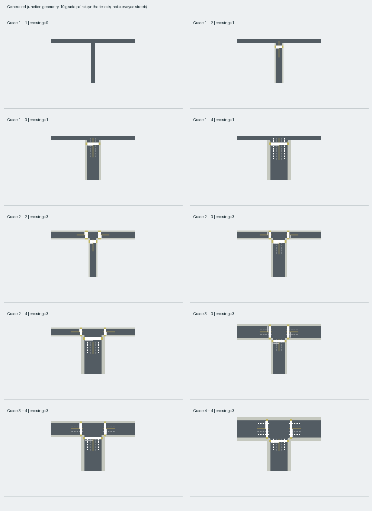
05 / 확인 근거
| 확인 항목 | 결과 | 무엇을 뜻하나요 |
|---|---|---|
| 공개 실제 생성 | 교차로 5 · 횡단부 2 · 경사판 4 · 점자 4 | 저장된 실제 원자료로 전체 재생성 |
| 노면 접합 | 외곽 43구간 / 내부 공유점 209개 | 높이 차가 부동소수점 오차 수준 |
| 경사판 옆 보도 | 24개 표본쌍 · 최대 높이 차 0.013mm | 평탄부 양옆의 실제 삼각면 연결 확인 |
| 점자블록 접지 | 바닥 20점 · 최대 차 0.021mm | 네 모서리와 중심을 완성 표면과 대조 |
| 보도면 단면 | 8개 단면 · 최소 1.5m | 장애물까지 모두 뺀 최종 유효 통로폭은 아님 |
| 회귀 검사 | 도로 40 · 교차로 11 · GLB 12종 | 합성 조합·회전 개구·브라우저 생성 묶음 검사 포함 |
소스 7a0323e · 공개 생성기 배포 기록 ↗ · 독립 검토자 generated_junction_audit의 보고서를 주 에이전트가 다시 확인했습니다.
06 / 남은 문제
공개 화면의 VWorld 연결 실패 안내는 남아 있습니다. 이번 확인은 저장된 실제 자료의 전체 재생성이며, 새 주소의 외부 조회까지 해결됐다는 뜻은 아닙니다.
도봉로198 원본 805동 중 도로 조정 후 804동을 유지하고 1동을 제외했습니다. 7.51㎡ 건물은 이동 여유가 없고 절단 후 약 1.04㎡만 남았습니다.
시야 후보 96동 중 실제 생성은 45동입니다. 별도 도봉로188 검사에서 825동을 모두 유지했어도 작은 건물의 약 30m 이동은 원위치 정확성의 한계입니다.
실제 모든 등급 조합·급경사·입체교차·야간을 확인하지 않았습니다. 시설 전체 부피를 제외한 통로폭도 미확인입니다.
수동 지정 정보는 유지합니다. 이번 검사 사본은 해당 브라우저에 저장돼 있으므로 다른 기기에서 같은 ID를 열어도 자동으로 공유되지는 않습니다.
우리동네 열기 ↗07 / 사진 기록
같은 장소의 회전 시점이 포함됩니다. 묶음을 펼쳐 사진 번호·관찰 내용·출처를 확인하세요. 정확한 촬영 위치 링크가 아닌 해당 일대의 검색 링크입니다.
중앙분리대, 청색 차선, 흰색 차선, 보도 가로수
원본 지도에서 이 일대 보기 ↗사진 첨부판에 수록: #001, #002, #003, #004, #005, #006, #007, #008
보도 있는 좁은 접속길, 본선 분리시설 관찰. 1–4 확정 표본 아님
원본 지도에서 이 일대 보기 ↗사진 첨부판에 수록: #009, #010, #011, #012, #013, #014, #015, #016
양쪽 보도 있는 접속길 입구 횡단보도와 연석. 1차도로 확정 철회
원본 지도에서 이 일대 보기 ↗사진 첨부판에 수록: #017, #018, #019, #020, #021, #022, #023, #024
간선도로 중앙분리대와 버스차로, 도로변 보도 시설
원본 지도에서 이 일대 보기 ↗사진 첨부판에 수록: #025, #026, #027, #028, #029, #030, #031, #032
주유소 차량 출입과 옆골목 구분, 모서리 노란선
원본 지도에서 이 일대 보기 ↗사진 첨부판에 수록: #033, #034, #035, #036, #037, #038, #039, #040
중앙선과 별도 보도 없음, 벽돌 담장과 전선
원본 지도에서 이 일대 보기 ↗사진 첨부판에 수록: #041, #042, #043, #044, #045, #046, #047, #048
노란 가장자리선, 담장 안쪽에서 뻗은 수목. 소유권 미확인
원본 지도에서 이 일대 보기 ↗사진 첨부판에 수록: #049, #050, #051, #052, #053, #054, #055, #056
아스팔트 골목과 밝고 거친 별도 포장 경사 통로가 함께 보임. 차량통행·재료 미확정
원본 지도에서 이 일대 보기 ↗사진 첨부판에 수록: #057, #058, #059, #060, #061, #062, #063, #064
노란 실선과 점선, 전신주, 계단과 배수
원본 지도에서 이 일대 보기 ↗사진 첨부판에 수록: #065, #066, #067, #068, #069, #070, #071, #072
건물 모서리를 따라 굽는 노란선, 맨홀, 가공선
원본 지도에서 이 일대 보기 ↗사진 첨부판에 수록: #073, #074, #075, #076, #077, #078, #079, #080
왕복2차로, 좁은 보도, 중앙선, 황백색 방지턱
원본 지도에서 이 일대 보기 ↗사진 첨부판에 수록: #081, #082, #083, #084, #085, #086, #087, #088
방지턱과 흰색 횡단보도 구분, 보도 앞 상품
원본 지도에서 이 일대 보기 ↗사진 첨부판에 수록: #089, #090, #091, #092, #093, #094, #095, #096
교차부 중앙선 단절, 횡단보도, 도로 가로지르는 배수로
원본 지도에서 이 일대 보기 ↗사진 첨부판에 수록: #097, #098, #099, #100, #101, #102, #103, #104
둥근 연석·점자블록과 그 위 기둥, 마을버스. 신호기 동작 미확인
원본 지도에서 이 일대 보기 ↗사진 첨부판에 수록: #105, #106, #107, #108, #109, #110, #111, #112
정지표지, 반사경, 내리막 접속, 턱낮춤과 배수구
원본 지도에서 이 일대 보기 ↗사진 첨부판에 수록: #113, #114, #115, #116, #117, #118, #119, #120
왕복4차로 본선과 좁은 접속길. 분리시설 끝단·횡단시설이 있어 골목 정면 연속 범위 미확정
원본 지도에서 이 일대 보기 ↗사진 첨부판에 수록: #121, #122, #123, #124, #125, #126, #127, #128
횡단보도 전 분리대 끝단, 정지선, 보행 난간
원본 지도에서 이 일대 보기 ↗사진 첨부판에 수록: #129, #130, #131, #132, #133, #134, #135, #136
지하철 승강기, 점자블록 연결, 가로수와 전신주
원본 지도에서 이 일대 보기 ↗사진 첨부판에 수록: #137, #138, #139, #140, #141, #142, #143, #144
직진·회전 유도 점선, 교차로 바깥 횡단보도, 신호기
원본 지도에서 이 일대 보기 ↗사진 첨부판에 수록: #145, #146, #147, #148, #149, #150, #151, #152
여러 유도선, 중앙선 재개, 노란 빗금 형태 표시
원본 지도에서 이 일대 보기 ↗사진 첨부판에 수록: #153, #154, #155, #156, #157, #158, #159, #160
분홍 유도선, 넓은 교차부, 붉은 노면, 공사시설
원본 지도에서 이 일대 보기 ↗사진 첨부판에 수록: #161, #162, #163, #164, #165, #166, #167, #168
공사구역에 따른 임시 경계, 유도선과 횡단보도
원본 지도에서 이 일대 보기 ↗사진 첨부판에 수록: #169, #170, #171, #172, #173, #174, #175, #176
다차로 직진·회전 유도선, 넓은 횡단보도, 신호기
원본 지도에서 이 일대 보기 ↗사진 첨부판에 수록: #177, #178, #179, #180, #181, #182, #183, #184
중앙버스차로 청색선, 보도 수목·전기함
원본 지도에서 이 일대 보기 ↗사진 첨부판에 수록: #185, #186, #187, #188, #189, #190, #191, #192
중앙분리대 연속, 차로별 방향 화살표, 안내표지
원본 지도에서 이 일대 보기 ↗사진 첨부판에 수록: #193, #194, #195, #196, #197, #198, #199, #200
08 / 원문